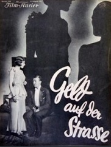
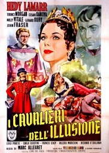
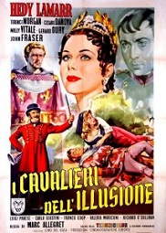
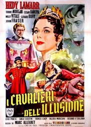

Filmes
Hedy foi considerada a "mulher mais bonita do mundo" e estreiou mais de 30 filmes.
O filme Ecstasy de 1933 foi o responsável por sua fama. Ecstasy foi um filme bem polêmico para a época pois foi o primeiro filme não pornográfico a representar uma relação sexual e orgasmo feminino.
Por sua contribuição para o cinema Hedy ganhou uma estrela na Calçada da Fama.
Abaixo estão algumas capas de filmes estrelados por ela. As imagens estão disponíveis no site: https://hedylamarr.com/about/filmography/


 

